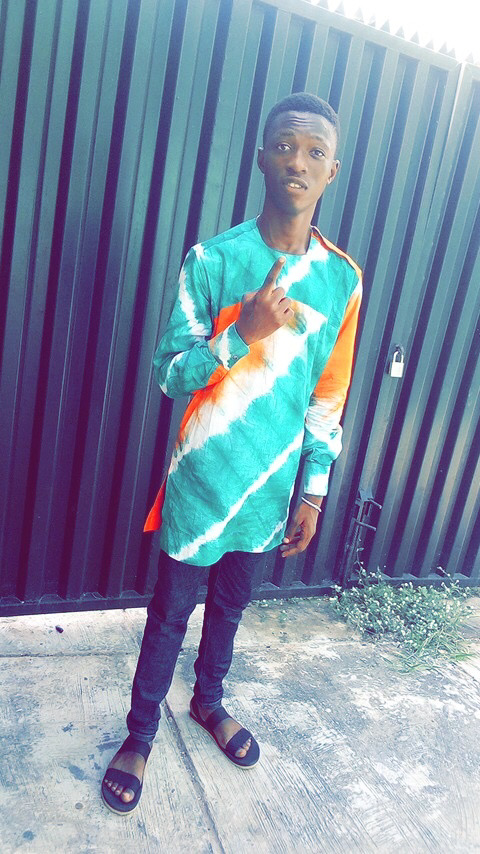
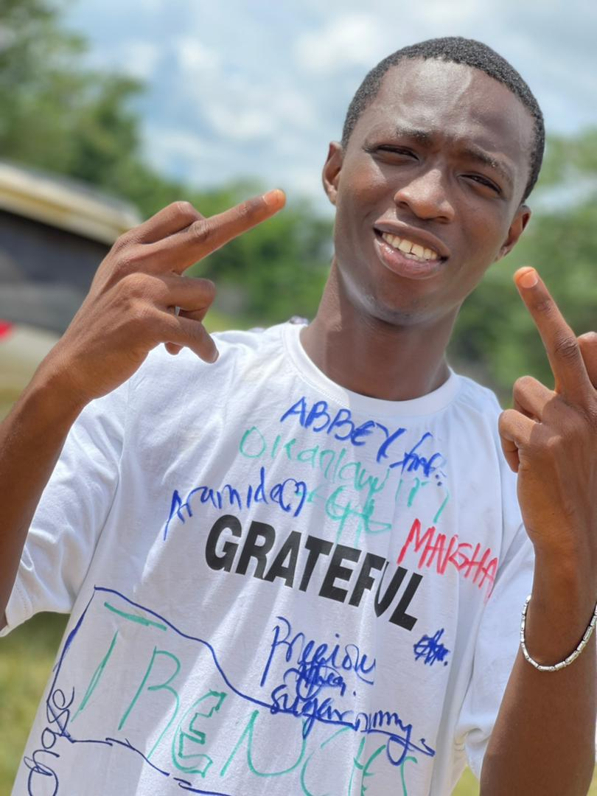

My name is Awoyinka Opeyemi popularly known as Hoppy.I am African from
Nigeria and my roots can be traced to Kwara state, lol i hear you
whisper "a yoruba demon",well you got that right. I am from the family
of 6 consisting of my Dad Mum and myself and 3 siblings, however my Dad
is resting eternally now. I will not forget to mention the fact i
originate from a devoted Christian home where morning devotion is like a
daily ritual. I have so many attributes which you'd meet depending on
the energy you bring to the board. I do not have a favourite food but i
love the Okra soup. From my identity, i hope you are beginning to see
what you're missing if you're not on my side. Moving on, I have cool
features that makes me who i am and most especially a rare gem and my
experinences in life has shaped me to be this amazing person, i won't be
talking about it today, it's a story for another day. But just incase
you're trying to picture who this person really is, give me the
permission to feed your eyes..
"Omo tan right? (in Youruba language)"
Photos Collection
A selfie of Me.

A rare ThrowBack picture of Me.

Yes, I'm a Graduate.
>
Links
This is a picture that leads you straight to the home page